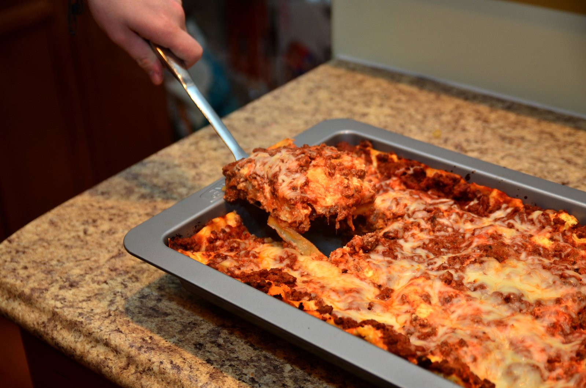

Lasagna Recipe
Below is the picture of the Lasagna

Description
Lasagna is a layered Italian dish made with pasta sheets, a rich meat sauce (often combining ground beef and sausage), and a creamy cheese mixture (ricotta, mozzarella, and Parmesan). The layers are repeated, topped with cheese, and baked until bubbly and golden. It is a comforting and versatile recipe that can be customized with different ingredients or prepared ahead for convenience.
Ingredients
Cheese Filling
- Ricotta cheese
- Parmesan cheese
- Mozzarella cheese
- Eggs
- Optional: Cottage cheese
Meat Sauce
- Ground beef
- Italian Sausage
- Onion
- Garlic
- Crushed tomatoes
- Tomato paste
- Marinara or Pasta Sauce
- Italian seasoning
- Salt
- Optional: Chicken broth, Worcestershire sauce, or red pepper flakes for added flavor
Lasagna Noodles
- 9-12 Lasagna Noodles (regular or oven-ready)
Optional Garnishes
- Fresh parsley or basil
These ingredients can vary slightly depending on the recipe
Steps
- Cook the Meat Sauce: Brown ground beef and/or sausage with onions and garlic. Drain excess fat, then add marinara or tomato sauce, tomato paste, and seasonings. Simmer until thickened
- Prepare Cheese Mixture: Combine ricotta (or cottage cheese), Parmesan, mozzarella, eggs, and herbs in a bowl
- Cook Lasagna Noodles: Boil lasagna noodles until al dente (or use no-boil noodles as directed).
- Layer the Lasagna:
- Spread a layer of meat sauce on the bottom of a greased 9×13-inch baking dish.
- Add a layer of noodles.
- Spread a portion of the cheese mixture over the noodles.
- Repeat layers (sauce, noodles, cheese) 2–3 times, ending with sauce on top.
- Add Cheese Topping: Sprinkle mozzarella and Parmesan cheese over the final layer.
- Bake: Cover with foil and bake at 350°F for 45 minutes. Remove foil and bake for another 15 minutes until bubbly and golden.
- Rest and Serve: Let the lasagna rest for 15–20 minutes before slicing to allow layers to set.
ENJOY!